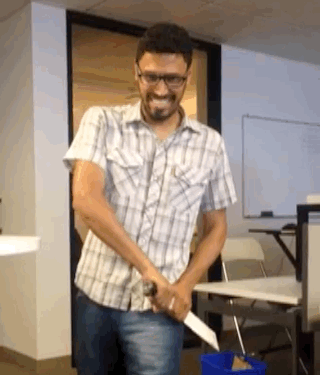
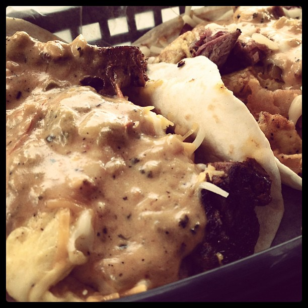
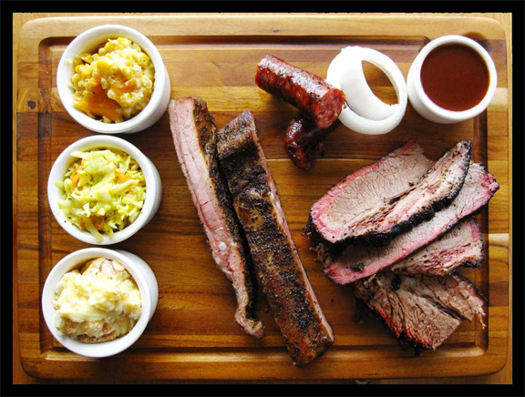
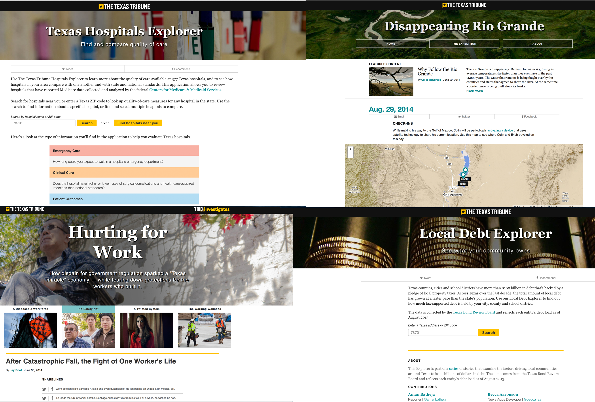
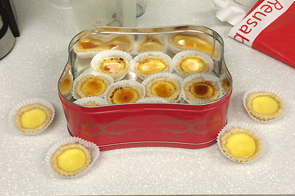

The Texas Tribune,
qué hacemos y cómo lo hacemos
qué hacemos y cómo lo hacemos
Por Marcos Vanetta / @malev
Quién soy?
- Marcos Vanetta
- Hacks/Hackers Buenos Aires
- Knight/Mozilla Fellow
- The Texas Tribune
- @malev
The Texas Tribune
- A punto de cumplir 5 años
- Nonpartisan
- Nonprofit
- Public policy
- Politics
- Texas oriented
Tiene oficinas en la ciudad de Austin

Keep Austin weird
Tierra orgullosa de sus "Breakfast tacos"
Y su BBQ
News App team
Qué hace el news app?
Cómo las hacemos?
Proceso de desarrollo
Como participamos de las mismas reuniones que los periodistas, formamos parte del proyecto desde el principio.
- Reunión de staff donde se discuten la agenda de la semana
- Kick off de una news app
- Reunión de "Esto es lo que vamos a hacer" con editores, diseñadores y gente de ventas.
Microreuniones
Reglas de Boyer
- Quienes son nuestros usuarios/lectores?
- Qué necesitan?
- Qué podemos hacer nosotros?
Reglas de plataforma
- Mobile first
- IE8 Readable
- Avoid server when possible
- No mockups!
Reglas de diseño
- Escuchar primero
- NO hay feature si no hay valor
- NO hay feature complejo si no hay MUCHO valor
- Sólo hacemos features que se puedan entregar
- Priorizamos al extremo
- Extraemos código genérico en librerías internas (CSVToHtml, tablesift.js, StyleGuides, etc)
Regla de Chris Chang
Do the thing you've already done, unless you can do it lazier.
Haz lo que ya hiciste a menos que lo puedas más vagamente
